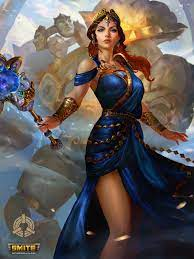

Hera
DEESSE DU MARIAGE ET DES FEMMES
-
Nom romain : Junon
Surnom : Aux bras blancs et aux yeux de vache
Père : Cronos
Mère : Rhéa
-
Héra est, bien malgré elle, la déesse la moins sympathique des dieux de l’Olympe : épouse et sœur de l’éternel infidèle Zeus,
elle était perpétuellement jalouse, ce qui l’avait rendu acariâtre et vindicative.
-
-
Héra n'a pas demandé à être la femme de l'homme le plus trompé de l'univers. De plus, elle a rejeté son frère
Zeus à plusieurs reprises. Mais Zeus a décidé de se déguiser en petit coucou mouillé pour le calmer.
Compatissant vraiment avec le pauvre oiseau, Héra le prit dans ses bras pour se réchauffer... et puis, boum,
Zeus reprit forme humaine et profita de la situation pour vaincre la réticence de sa sœur.
-
Un jour, par jalousie, Héra demanda au géant aux cent yeux Argos Panoptès ("qui voit tout"), d'espionné
Lo avec qui Zeus la trompait. Mais Hermes tua le géant sur ordre de Zeus ...
Triste Héra transforma le géant en paon, son animal préféré : ses yeux apparaissent toujours sur ses plumes.
-
La rancune aussi vers les enfants de ses rivales. Le meilleur exemple est Hercule : elle lui a envoyé deux serpents
dans son berceau à la naissance (mais il les tua). Hermes eut une idée : puisque le fils de Zeus ne pouvait pas vivre
éternellement sans téter le lait d'Héra, il apporta le petit pendant qu'Héra dormait. Réveillée par l'allaitement,
elle repoussa violemment l'enfant, et le lait jaillit droit dans le ciel : cela a dessiné la voie « lactée » !